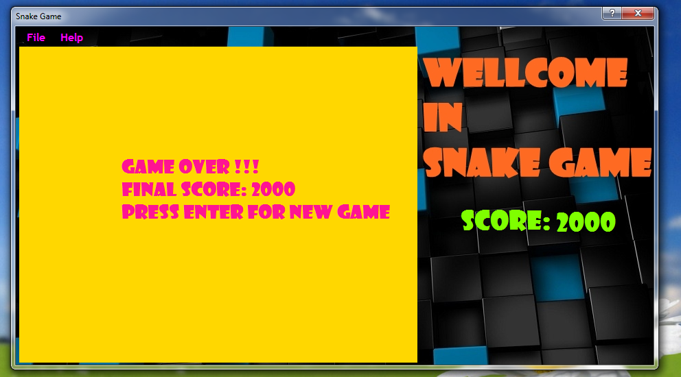

My_Snake_game
Introduction
Snake is a video game concept which originated during the late 1970s in arcades. The name applies to the general game design; the original was not named Snake, and there is no definitive version of the game. Its simplicity has led to many implementations of the Snake concept. After it became the standard pre-loaded game on Nokia Mobile Phones in 1998,Yes, again a snake game if you aren't bored yet. You must have seen a lot of snake games created in different languages. But have you ever seen a snake game that is controllable both by keyboard and joystick? Yes, this is the difference between snake games and Engerek.
Building the Sample
Update
-Check Input
-Update Player
-Check Collision
Render
-Draw Player
-Draw Fruit
-Draw Score
Description
"Snake" is probably one of the most simplest games to understand (along with many other classic arcade games). Which is why it's a great example to game programming. It requires all of the necessary requirements for a game.
Game Logic
Update
-Check Input
-Update Player
-Check Collision
Render
-Draw Player
-Draw Fruit
-Draw Score
Concept
Snake is an easy game to understand. You start off as a "head" or a really, really small snake, roam around the playing field to collect food and you grow. You try to eat yourself, you die, if you run out of bounds, you die. Not much to it. So let's dig
a bit deeper and understand how it works.
Each part of the snake can be considered an instance of an object, we'll call it "SnakePart". Each part follows the part in front of it. The snake and it's body, usually follow along a grid-based path. Each part is assigned an X and a Y coordinate, then
gets rendered to that coordinate on screen. The food can be an instance of "SnakePart" rather then creating a new class. Set it's X and Y randomly to fit into the screen and then render it.
That's basically it for the concept of the snake game, can't really go much deeper with it.



Click here to add your code snippet. private List<Circle> Snake = new List<Circle>();
private Circle food = new Circle();
public Form1()
{
InitializeComponent();
//Set settings to default
new Settings();
//Set game speed and start timer
gameTimer.Interval = 1000 / Settings.Speed;
gameTimer.Tick += UpdateScreen;
gameTimer.Start();
//Start New game
StartGame();
}
private void StartGame()
{
lblGameOver.Visible = false;
//Set settings to default
new Settings();
//Create new player object
Snake.Clear();
Circle head = new Circle();
head.X = 10;
head.Y = 5;
Snake.Add(head);
lblScore.Text = Settings.Score.ToString();
GenerateFood();
}
Click here to add your code snippet. private List<Circle> Snake = new List<Circle>(); private Circle food = new Circle(); public Form1() { InitializeComponent(); //Set settings to default new Settings(); //Set game speed and start timer gameTimer.Interval = 1000 / Settings.Speed; gameTimer.Tick += UpdateScreen; gameTimer.Start(); //Start New game StartGame(); } private void StartGame() { lblGameOver.Visible = false; //Set settings to default new Settings(); //Create new player object Snake.Clear(); Circle head = new Circle(); head.X = 10; head.Y = 5; Snake.Add(head); lblScore.Text = Settings.Score.ToString(); GenerateFood(); }
Source Code Files
- source code file name #1 - Form1.cs
- source code file name #2 - Program.cs
More Information
Creating the form is easy. All we need are two controls. A PictureBox, for rendering the game, and a timer, for updating the game every X miliseconds. Go ahead and drag a PictureBox and a Timer onto your form. We'll be modifying some of it's properties,
we'll also be modifying some of the Form properties. (Feel free to change any of these properties, these are just for personal preference and you can design yours to however you choose.)
Form Properties
FormBorderStyle FixedSingle
MaximizeBox False
Size 362, 304
StartPosition CenterScreen
Text Snake
PictureBox Properties
(Name) pbCanvas
BackColor CornFlowerBlue
Location 13, 13
Margin 4, 4, 4, 4
Size 320, 240
Timer Properties
(Name) gameTimer
(We're going to create the rest of the timer inside the actual code)